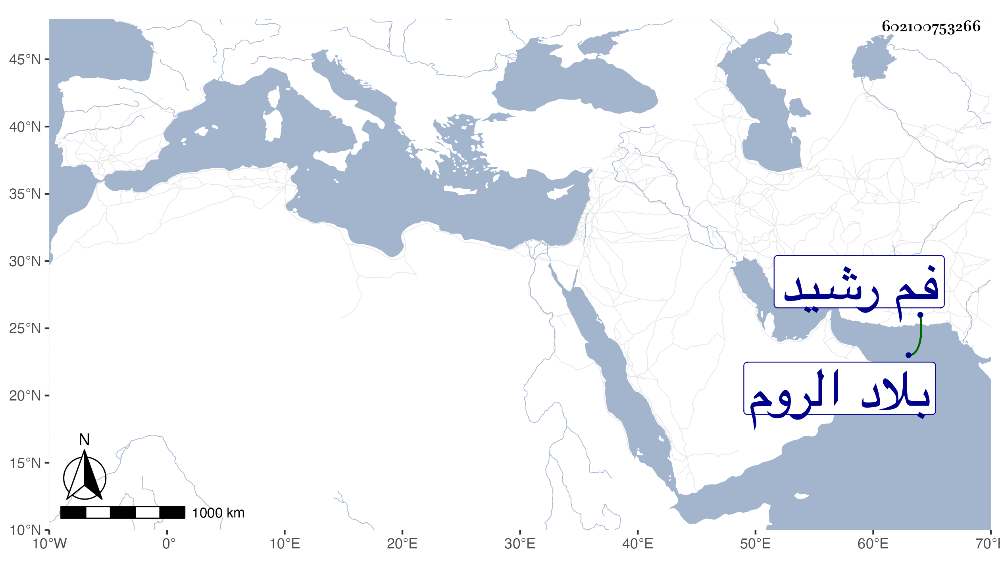

0902Sakhawi.DawLamic.ITO20230111-ara1.EIS1600.602100753266
Biography ID: 602100753266
988
سليمان بن أرخن بك بن محمد كرشجي بن عثمان . كان جده ملك بلاد الروم ، فلما مات قبض ابنه مراد بك على أخيه والد صاحب الترجمة فسلمه ثم حبسه ومنعه من إتيان النساء خوفا من أن يعقب فدست له جارية فأولدها سليمان هذا وشاه زاده ثم مات ففر بهما مملوك لأبيهما وقدم بهما عل الأشرف برسباي فأكرمهما وضم سليمان إلى ولده العزيز يوسف وأخته إلى الحرم السلطانية ثم رام المملوك المشار إليه الفرار بهما إلى الروم لمال وعد به من بعض ملوكه واتفق مع جماعة من التركمان وغيرهم فأخذهما من القلعة وركب بهما بحر النيل ليتوصل إلى فم رشيد ويركب بهما في غراب أعد لذلك ولما علم السلطان بهذا تألم وأرسل في أثرهم فأدركوا بالقرب من فم رشيد وقد عاقهم الريح عن الخروج إلى بحر المالح فاقتتل الفريقان قتالا شديدا فكان الظفر لجماعة السلطان فوسط المملوك وقطع أيدي جماعة وحبس هذا بالبرج وكان يوما مهولا زاد فيه غضب السلطان إلى الغاية ثم أطلقه بعد مدة وصار عند العزيز على عادته ثم تزوج السلطان بأخته وصارت خوند شاه زاده وتزوجها الظاهر بعده واستولدها أولادا إلى أن طلقها في سنة خمس وخمسين ، ومات سليمان قبل ذلك بالطاعون سنة إحدى وأربعين وهو ابن خمس عشرة تقريبا . وذكره المقريزي باختصار .
